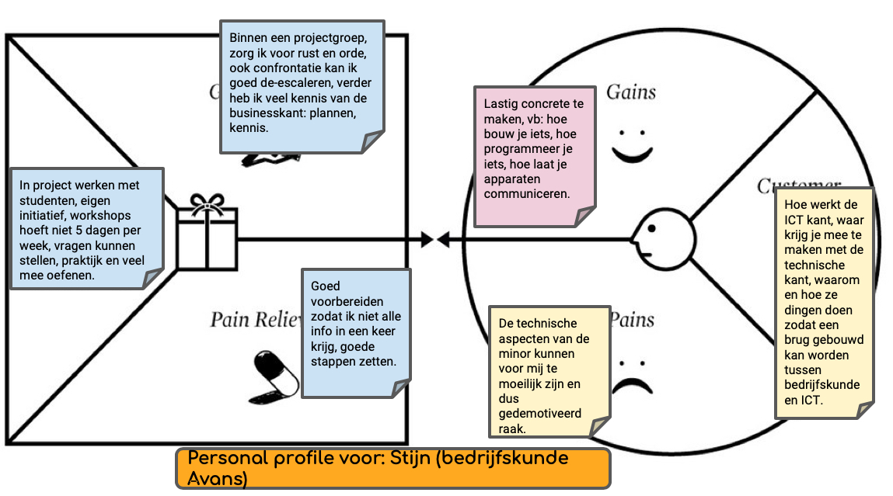
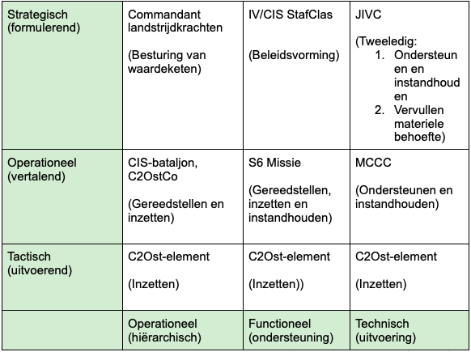

Mijn Portfolio

Wie ben ik?
Ik ben Stijn van den Hoven, ik ben 19 jaar en woon in Ulvenhout. Ik studeer bedrijfskunde en in mijn vrije tijd ga ik graag wielrennen en wandelen. Daarnaast ben ik altijd geïnteresseerd in de werking van techniek en de nieuweste innovaties.

Minor Smart Industry
Vanaf het begin van mijn opleiding heb ik al interesse in de technische aspecten binnen het bedrijsleven. Daarom heb ik ook gekozen voor deze minor, om mijn kennis op dit gebied te vebreden.

Mijn opleiding
Ik zit in het derde jaar van mijn opleiding bedrijfskunde aan Avans hogeschool in Breda. Deze opleiding heb ik gekozen vanwege mijn interesse in het bedrijfsleven en de veelzijdigheid van de opleiding.
Smart Start
Smart Start
Tijdens de workshops Smart Start kregen wij wekelijks een opdracht. Deze opdracht bestond meestal uit een literatuuronderzoek naar een van de thema's van Smart Industry. Onderstaand kunt u delen van weekopdracht 1 en weekopdracht 6 bekijken.
Weekopdracht 1, blog kruispunten Smart Industry en bedrijfskunde
Gedurende de eerste workshop van smart start is er een aantal onderdelen van Smart Industry aan bod gekomen. Deze waren te onderscheiden in de volgende vier categorieën: waarde propositie, processen, menselijk kapitaal en organisatie en informatie. Maar wat is Smart Industry nou eigenlijk? Zoals tijdens behandeld bestaat dit uit de eerdergenoemde aspecten. Het draait om het integreren van de nieuwste ICT en communicatietechnologie in de gehele waardeketen. Het doel hiervan is niet alleen het efficiënter en flexibeler maken van een proces, maar ook moet de klantwaarde in het achterhoofd worden gehouden.
Dit sluit dan ook goed aan op mijn opleiding bedrijfskunde. Niet alleen staat bij bedrijfskunde het efficiënter en effectiever maken van processen centraal, ook is het creëren van waarde voor de klant belangrijk. Dit is bijvoorbeeld in de literatuur van lean green belt naar voren gekomen. Waarin het “slanker” maken van een proces centraal staat. In deze literatuur staat echter de communicatie tussen de verschillende onderdelen van een productie lijn niet voorop, hier is in vroegere literatuur rondom lean vaak nog menselijk handelen voor nodig. Hierop geeft Smart Industry een mooie aanvulling door het integreren van internet communicatie en informatie technologie in de gehele waarde keten.
Tijdens het nader onderzoeken van de nieuwste artikelen rondom lean six sigma kom je al snel uit bij het gebruik van industrie 4.0 en IoT in bijvoorbeeld het supply chain management. Dit is dan ook zeker te gebruiken binnen mijn eigen opleiding. Niet alleen bij lean six sigma zijn er kruispunten met mijn eigen opleiding. Zo sluit het vak informatiemanagement dat wordt verzorgd op mijn opleiding ook goed aan bij de minor Smart Industry. Dit vak staat in het teken van informatie stromen en voorzieningen binnen bedrijven. Onderwerpen als big data, proces mining en artificial intelligence worden hier behandeld, met de nadruk op de functie die ze vervullen maar hoe dat wordt gedaan wordt achterwegen gelaten. Deze minor zal mij meer inzicht gaan geven in hoe deze technologieën werken binnen een organisatie. Al deze nieuwe kennis zal voor een mooie voorsprong op de arbeidsmarkt zorgen ten opzichte van andere bedrijfskundige.
Hier kunt u meer informatie vinden over behaalde competenties, waaronder: Bussines case over de volwassenheid van he C2OstCo, de smart journey en over mijn ervaringen van het afgelopen semester
In de laatste weekopdracht van Smart Start is te zien hoe er aanzienlijke progressie is geboekt op het gebied van Smart Research. In dit onedzoek is een instrument opgesteld om een innovatieve cultuur in een organisatie te meten. Smart Start is ondanks mijn eerdere ervaring met literatuuronderzoek van waarde geweest. Zo heb ik geleerd om kritischer te kijken naar het gebruik van bronnen en ik heb mijn wijze van feedback geven verbeterd door elke weer op serieuze wijze naar se onderzoeken van medestudeten te kijken. Wilt u onderstaand onderzoek helemaal lezen klil dan hier.
Weekopdracht 6
Communicatie
PDCA-cyclus
In deze paragraaf wordt het communicatieproces aan de hand van de PDCA-cyclus beschreven (Managementplatform, 2014).
Plan
Hierin wordt het doel besproken van de communicatie. Het doel was om de relatie tussen industry 4.0 en cultuur te onderzoeken. Daarbij werd er ook verwacht dat er een instrument ontworpen zou worden die toegepast zou kunnen worden op de projectorganisatie die meet in hoeverre het bedrijf klaar is voor industry 4.0. Hierbij is de doelgroep van het artikel voornamelijk personen die zijn geïnteresseerd in het onderzoeken en meten van bedrijfsculturen.
Do
In de tweede fase staat het uitvoeren van de activiteiten centraal. Het doel zou moeten worden behaald als er wetenschappelijke informatie gezocht zou worden over de relatie tussen cultuur en industry 4.0. Uit deze informatie zijn aspecten uit gerold die helpen om een instrument te ontwerpen die de gereedheid van een bedrijf ten opzichte van industry 4.0 zou kunnen meten.
Check
In deze fase staat het evalueren centraal. Om een zo objectief en wetenschappelijk mogelijk artikel te kunnen schrijven, is het nodig dat de bronnen van een dusdanige kwaliteit zijn. Hiervoor is gebruik gemaakt van een CRAAP-test. Hiermee kan de lezer, die interesse hebben aan gefundeerde resultaten worden overtuigd van de validiteit en betrouwbaarheid van het onderzoek.
Act
In deze laatste fase wordt gereageerd op de uitkomsten van de controles en analyses uit de check fase. Omdat de bronnen van een dusdanige objectieve en wetenschappelijke kwaliteit zijn, is het mogelijk om de resultaten op een dusdanige objectieve en wetenschappelijke manier te beschrijven. Als dit niet was geweest, hadden andere bronnen gezocht moeten worden. Mijn communicatiedoel om informatie op een zo objectieve en wetenschappelijke manier mogelijk te verstrekken is dus behaald.
Naast de twee bovenstaande weekopdrachten heb ik gedurende de workshops Smart Start mijn best gedaan elke week een mooi prodcut te leveren waarbij ik zelf kon leren en door het geven van feedback andere kon inspireren. Echter is door een fout met het opslaan de weekopdrachten 2 tot en met 4 verloren gegaan. Wel heb ik nog een discussie/podcast samen met Marieke Pas over het platform businessmodel. De intro van het onderzoek en de video ziet u onderstaand.
Weekopdracht 5
Gedurende de vijfde workshop van Smart Start is de weekopdracht, die deze week gaat over het platform businessmodel, van start gegaan. Deze week zal er door middel van een literatuuronderzoek antwoord worden gegeven op de volgende hoofdvraag. Wat is de relatie tussen het platform businessmodel en smart industry? Het onderzoek begint door eerst een tweetal deelvragen te behandelen.
- Wat is een platform businessmodel?
- Wat is Smart Industry/industrie 4.0?
Na het beantwoorden van deze vragen zal er, door te kijken naar toepassingen van het platform businessmodel worden uitgelegd hoe dit in verband staat met smart industry.
Resultaten Deelvraag 1 Wat is de relatie tussen bedrijfscultuur en Smart Industry?
Het onderzoek van Andreas Schumacher kijkt naar het bepalen van de volwassenheid van een organisatie op het gebied van industry 4.0. Er is een negental dimensies opgesteld waarmee de volwassenheid van de organisatie kan worden bepaald. Een van deze aspecten is ook de cultuur die heerst in een organisatie. Dit laat zien dat de cultuur in een organisatie wel degelijk in relatie staat met Smart Industry. Het is echter maar een klein deel tot de bereidheid voor industry 4.0. (Hana Mohelska 2018)
Het onderzoek van Machado versterkt deze bevinding verder. Ook dit onderzoek heeft gekeken naar de volwassenheid van organisaties op het gebied van industry 4.0. Zij hebben bedrijven gecategoriseerd en gekeken waar zij slecht in presteerde. Een van deze aspecten was het ontbreken van een geschikte bedrijfscultuur. Verder is het heel belangrijk om een bedrijf te hebben waarbij iedereen elkaar vertrouwd. Uit onderzoek van J Zaki, Paul blijkt dat vertrouwen heel belangrijk is voor innovatie. Wat deze bedrijfscultuur omvat is te lezen onder deelvraag 2.
Deelvraag 2 Wat zijn de kenmerken van een bedrijfscultuur die passen bij de ambities van Smart Industry?
Machado stelt dat de cultuur die nodig is voor het succesvol functioneren van industry 4.0. Deze bestaan vooral uit het de vrijheid om innovatief te denken en handelen, medewerkers de eigen productie laten begrijpen, het doorbreken van de grenzen tussen verschillende functies en het creëren van een bedrijfscultuur. Volgens dit onderzoek moet deze cultuur zorgen voor meer zekerheid bij medewerkers over de ‘nieuwe’ technologieën. Daarnaast is het belangrijk dat de organisatie een passend data beleid heeft.
Wallach stelt dat er geen slechte of goede bedrijfscultuur is. Een bedrijfscultuur is wel op zijn effectiefst als deze de missie, visie en doelstellingen van een organisatie ondersteunt. Er wordt onderscheid gemaakt in drie hoofdzakelijke culturen binnen bedrijven. De bureaucratie waar een hiërarchische cultuur heerst en er duidelijke taken en verantwoordelijkheden zijn, de innovatiecultuur waar creativiteit en resultaatgerichtheid centraal staan en de ondersteunende cultuur waarin vertrouwen, vriendschap en teamwork centraal staan. Het onderzoek laat zien dat een innovatieve cultuur goed aansluit bij smart industry, dat draait om nieuwe en onbekende technologieën implementeren.
Deelvraag 3 Hoe kan dit meetbaar gemaakt worden?
Het meetbaar maken van een bedrijfscultuur wordt door middel van een instrument gedaan. In dit instrument wordt met het verzamelde kennis materiaal een aantal belangrijke punten opgesteld die worden beoordeeld van 1 tot 5 waarbij 1 niet tot weinig betekent en er bij 5 sprake is van volledige implementatie. Deze criteria zijn opgesteld met de informatie hierboven. Het meetinstrument is opgesteld aan de hand van de verzamelde data in het literatuur onderzoek.

Communicatie doelgroepen
Zoals bovenstaand is te zien zijn de weekopdrachten voor veschillenden doelgroepen geschreven. Waar weekopdracht 1 gericht was op het informeren van andere studenten die deze minor wilde volgen is er bij weekopdracht 6 de communicatie proces gedefinieerd. Na de eerste zes weken met workshops zijn we aan de slag gegaan met het project, waar ik met veel verschillende doelgroepen te maken kreeg. Dit waren om te beginnen: de opdrachtgever, mede-studenten, docenten en externe personen. Voor de communicatie naar de opdrachtgever vond er wekelijks een vergadering plaats waar de stand van zaken werd besproken, hier leek het ons het best om voornamelijk de resultaten te bespreken. Zoals ook is aangegeven in mijn Smart Journey wilde ik meer ervaring opdoen met het communiceren met verschillende doelgroepen. Dit begon met het overleggen met de oudstudenten van deze minor die het project Defensie vorig semester hadden gedaan. Hier leek het de beste communicatiemethode om niet te veel voor te bereiden om zo hun ervaringen en proces boven tafel te krijgen, dit is een hele ander aanpak dan met de vergaderingen met de opdrachtgevers die we uitgebreid voorbereiden. Daarnaast zijn we in de laatste weken van de minor ook bezig geweest met een promomtiefilpmje voor het seminar waar ik in de begin fase een bijdrage bij heb geleverd. De video is gemonteerd door Marieke Pas. Daarnaast is er ook met het maken van een podcast, voor weekopdracht 5, geexperimenteerd. Deze wijze van communicatie is meer gericht op het informeren van en jongere doelgroep met een interesse in het platform businessmodel.
Terug kijkend op de gekozen communicatie stijlen ben ik tevreden met de methodes die ik gehanteerd heb. Wel zal ik in de toekomst bij vergaderingen met opdrachtgevers de informatie is beknopter houden zodat zij alleen de relevante kennis en informatie ontvangen. Daarnaast vind ik dat ik soms niet actief genoeg meedeed aan de vergaderingen en dus te veel op de achtergrond bleef, dit wist ik van mijzelf maar afgelopen semester heeft wel voor nieuwe inzichten gezorgd. Zoals dat een les voor iedereen waardevoller wordt als ook ik meer van me laat horen en een bijdrage lever. Ik wil dan ook in de toekomst van mijn eigen opleiding een actievere rol gaan vervullen, in vergaderingen en in lessen en workshops.
Professionele ontwikkeling
Voor deze competentie heb ik een Smart Journey opgesteld, waarin in een planning over de gehele periode van de minor, staat aan welke Smart Start competenties ik wilde gaan werken, ook zijn er persoonlijke doelstellingen opgesteld gekoppeld aan een week en met een uitleg van de aanpak. In de Smart Journey zijn persoonlijk doelen opgesteld, deze zijn ook besproken met medestudenten en waar nodig aangepast, ook heb ik hen om feedback gevraagd en aan de hand van de feedback kritisch gekeken naar de doelstellingen. Ik ben me heel bewust van mijn valkuilen en mijn sterktes. Zoals ik eerder had genoemt is een van mijn zwaktes dat ik te veel op de achtergrond blijf, hier heb ik dit semester tijdens de vergaderingen al mijn best op gedaan door eerder te zeggen wat ik denk. Ook gaat dit steeds beter binnen de projectgroep waar ik vanuit verschillende rollen een bijdrage lever aan het proces. Een van mijn sterktes is het dat ik in alle rust kan communiceren en mijn boodschap tot te kern kan beperken en daardoor de aandacht van toehoorders kan bewaren. Dit hiermee ook een kans die ik kan benutten door gebruik te maken van deze sterkte. Dit is dan ook verwerkt in de Smart Journey. Als ik terug kijk naar deze doelen ben ik voor een groot deel tevreden, ik had graag zoals eerder benoemd meer willen bijdragen aan workshops maar het leveren van mijn bijdrage in projectwerk is zeker gelukt.
Volwassenheid Industry 4.0 binnen Defensie
Naast het reguliere onderzoek heeft er ook gezamelijk een onderzoek plaatsgevonden naar de volwassenheid van Defensie op het gebied van Industry 4.0/Smart Industry. Dit onderzoek is meegenomen tijdens de interviews die plaatsvonden voor het reguliere onderzoek. Voor het gehele document kunt u hier klikken.Smart Business
Als bedrijfskundige heb ik al veel ervaring met business. Daarom ga ik mij proberen verder te ontwikkelen in te aspecten die aan bod komen. Dit begint bij het bepalen wat ik met deze minor wil bereiken voor mijzelf. Dit heb ik tijdens de eerste workshop gedaan door een persona te maken aan de hand van een template. Als ik terug kijk naar dit model zie ik een aantal dingen die terug zijn gekomen in de minor, zo heb ik te maken gehad met techniek waar ik niet veel van begreep maar dit zorgde niet voor demotivaite maar juist voor meer energie om het juist deze nieuwe dingen te leren daarom heb ik ook voor de minor gekozen.
Smart Business-TOM3 model
Bovenstaand is een aangepast TOM3 model te zien die tijdens een van de gastlessen van Smart Business is voorgelegd. Ik en mijn projectteam vonden dit een zeer geschikt model om toe te passen bij ons project voor Smart Business. Na overleg met de opdrachtgever is besloten een aantal aanpassingen te maken aan het model, vanwege de complexiteit van de koninklijke landmacht. Zo zijn Mens, Methode en Machine vervangen door: operationeel, functioneel en technisch. Ook zijn tactisch en operationeel op de X-as omgedraaid in verband met de structuur binnen Defensie. Het maken van een TOM3 model gaf mij een nieuwe uitdaging naast het maken van de BMC voor Defensie, waarvan ik als bedrijfskundige al vaak heb gemaakt in het verleden. Alle onderdelen benoemd in het model zijn uiteraard onderbouwd dit is terug te vinden in het eindrapport van de projectgroep. De link naar dit rapport is te vinden onder Smart Project.
Het TOM3 model wordt gebruikt om de implicaties van de verandering in kaart te brengen. Echter is door de door ons bedacht prototype zo goed als transparant voor de gebruiker, wanneer de datacompressie een maal werkt zal er niet veel te merken zijn buiten de verbeterde capaciteit van de verbinding. Dit betekent niet dat het TOM3 model niet van waarde is geweest want de bewustwording van de transparantie van de verandering is ook een antwoord op de vraag welke implicaties er met de innovatie meekomen. Als we kijken naar de gevolgen voor de keten van het C2OstCo dan zien we dat er ook hier niet veel veranderd, de veranderingen die plaats vinden zijn in positieve zin. Het C2OstCo zorgt namelijk voor een volledig functionerende computerinfrastrctuur in alle omstandigheden, deze netwerken worden gebruikt door de militairen in het veld. Als zij meer capaciteit op bijvoorbeeld de SatCom verbinding hebben is dat alleen maar in hun voordeel.

Bovenstaand ziet u het BMC dat is gemaakt voor de opdrachtgever. Deze BMC is ook deels gebruikt bij het invullen van het TOM3 model en is ook gebruikt om de impicaties van de verandering in kaart te brengen. Echter is ook hier geen verandering in het businessmodel te vinden. De gevolgen van het protorype en advies dat wij hebben gegeven is niet te zien in het businessmodel. De benodigde veranderingen beperken zich na de implementatie tot het toevoegen van een module over datacompressie tijdens de opleiding van de relevante militairen. Ook is er een BMC uitgewerkt voor de gehele Koninklijke Landmacht deze ziet u onderstaand.

Smart Business workshops
Tijdens de workshops van Smart Business is er een groot aantal bedrijfskundige thema's behandeld. Deze waren voor een deel herhaling maar er zaten ook nieuwe onderdelen tussen. De workshops die voornamelijk herhaling bevatten heb ik desondanks als leerzaam ervaren, het delen van mijn kennis met andere en het extra oefenen is naar mijn inziens waardevol geweest.
Bij een van de eerste workshops kregen we les over het Business Model Canvas (BMC), deze gastles werd gegeven door een medewerker AXA verzekeringen. De les stond in het teken van een probleemstelling, deze had betrekking tot autoverzekeringen en premies in Turkije. Samen met mijn groep zijn we tot een idee gekomen namelijk een beacon dat de rijgedrag waarneemt en een risico inschatting maakt, de gehele presentatie vindt u hier. Deze les lag erg dit bij mijn eerdere ervaring en kennis die ik op mijn opleiding heb opgedaan. Toch heeft deze les ervoor gezorgt dat ik mijn kennis kon delen met studenten waar ik mee samenwerkten. In de workshop die hierop volgde kregen we een nieuwe model uitgelgd. In deze workshop werden eerst het BMC, value proposition canvas en value realisation model. Hierna werd het operationele model volgens TOM3 uitgelegd en er werd een eerste opzet gemaakt voor onze opdrachtgever. Dit model was aan het begin ingewikkeld maar uiteindelijk hebben we na enkele aanpassingen het model ook toegepast tijdens het project zoals bovenstaand te zien is. Ik heb deze les als zeer waardevol ervaren en het TOM3-model hoop ik zeker ook in de toekomst te kunnen gebruiken.

De laatste workshops van Business gingen over het functioneren van het brein en de scrum methode. Om met de eerste te beginnen. Voor deze workshop wist ik niet wat ik moest verwachten. Het was een onderwerp waar ik mijzelf nog niet in verdiept had. De workshop was zeer interessant en leerzaam. Het is met mijn interesses niet direct toepasbaar binnen mijn opleiding maar het was wel leerzaam en leuk om te volgen. De laatste workshop ging over de scrum methodiek. Dit was wederom bekend terrein voor mij en de workshop was daardoor niet heel leerzaam, wel was het uitvoeren van de scrums in deze workshop wel leuk en nieuwe voor mij.
Smart Project
Bij dit onderdeel kunt u meer lezen over het project waar ik in samenwerking met Levi van Hoogstraten en Marieke Pas het afgelopen semester aan heb gewerkt. Dit project was voor het Command And Control Ondersteuningscommando (C2OstCo) bij de Koninklijke Landmacht. Onze opdrachtgever heeft naar aanleiding van de resultaten van de vorige projectgroep ons de opdracht gegeven onderzoek te doen naar geschikte compressie technieken voor de Wide Area Network (WAN) middelen van het C2OstCo. Deze opdracht was een mooie uitdaging voor mij als bedrijfskundige, ik had namelijk geen enkele voorkennis over de werking van datacompressie en wilde graag een kijkje hebben in de wereld van de Landmacht. Ik zag dit project als een mooie gelegenheid om samen met een informatica student en andere bedrijfskundige onze kennis te delen en van elkaar te leren. Zo heb ik in samenwerking met de andere bedrijfskundige kennis gedeeld over het opstellen van een volledig PvA met de informatica. Ik heb gedurende het project mijn best gedaan om vanuit vercshillende projectrollen zoals vermeld in SP51. Dit heb ik gedaan door meer op te steken van de informatica kant van het project, door het meekijken en meehelpen bij deze student. Maar ook door te wisselen van leiding geven binnen de projectgroep naar meer volgen en uitvoeren binnen de groep.
Proffesionele ontwikkeling
Gedurende deze Minor ben ik bezig geweest met mijn professionele ontwikkeling. Dit is onder andere gedaan door voorafgaand aan de projectperiode een aantal doelen op te stellen, deze kunt u lezen onder Smart Start, Smart Journey. Daarnaast heb ik door actief mee te doen tijdens de intervisies ook gewerkt aan deze ontwikkeling. Om te beginnen met de veranderkleuren van Caluwe, deze zijn uitgevoerd en daarna vergeleken per project lid. Onderstaand ziet u de resultaten van mijn Caulwe test. Opvallend is dat de twee kleuren waar ik het laagst scoor de kleuren zijn die het meest bij onze opdrachtgever past. Dit zou tot conflict kunnen leiden wanneer een verandering daadwerkelijk moet worden geimplementeerd. Toch heeft dit niet geleid tot enige vorm van conflict omdat wij natuurlijk niet betrokken zijn bij de daadwerkelijke implementatie van het advies en prototype. Wel is deze kennis nog toegepast in het project door een advies over de implementatie uit te brengen in het rapport, deze is gebasseerd op de veranderkleuren van Caluwe en de veranderstappen van Kotter.

Ook is er door middel van het bespreken van mijn persoonlijke doelstellingen met medestudenten (peers) verder nagedacht over mijn ontwikkeling gedurende deze minor. Ook heb ik tijdens een van de intervisie door het maken van een model waar je de dingen die je leuk vond, minder leuk, wat je meer had gewild en wat je hebt geleerd. Dit is te zien in onderstaande afbeeling. Door dit op te schrijven kreeg ik voormijzelf helder wat ik tot nu toe al had geleerd en dat zorgt voor extra motivatie.

Het onderzoek en onderzoeksplan zijn naderhand gevalueerd door middel van het opstellen van een discussie. Hier worden de validitei, betrouwbaarheid en mogelijke gebreken van het onderzoek behandeld.
De resultaten van het onderzoek laten zien dat met het prototype aanzienlijke winsten zijn te behalen. Dit resultaat komt niet direct overeen met de resultaten van het literatuuronderzoek. Naar aanleiding van dit literatuur- en labonderzoek is gebleken dat niet alle technieken geschikt waren voor Defensie. Hierdoor is na overleg besloten om door middel van een programma dat pdf uit kan pakken en aparte onderdelen kan comprimeren. De resultaten die behaald zijn voldoen aan de verwachtingen en laten zien dat er eenvoudig winst met deze compressie valt te behalen.
Het literatuuronderzoek heeft alle bekende en bewezen technieken overwogen en beoordeeld op geschiktheid van Defensie. Hiermee is het onderzoek wel valide maar niet volledig generaliseerbaar omdat de selectie gemaakt voor het labonderzoek is gebasseerd op de geschiktheid binnen de Nederlandse Koninklijke landmacht. Dit betekent dat de resulataten en conclusie niet gelden voor andere personen of groepen. Ook is het onderzoek, zoals in de onderzoeksmethode is onderbouwd, betrouwbaar door het beoordelen van de bronnen aan de hand van onze selectie eisen.
De resultaten van het testen en het literatuuronderzoek behandelen niet de toepassing van deze techniek in een militaire omgeving. Door de beperkingen die de maatregelen rond COVID-19 met zich mee bracht is het projectteam niet in de gelegenheid gekomen om het prototype te testen in operationele omgeving. Naar alle waarschijnlijkheid zal het prototype weldegelijk functioneren in deze omgeving. De implicaties die dit met zich meebrengt zijn beperkt, het betekent enkel dat het prototype verder moet worden ontwikkeld en getest in een operationele omgeving.
Vervolgonderzoek dient te worden uitgevoerd om zeker te zijn van het volledig functioneren van deze techniek in een operationele omgeving. Hierbij dient ook aandacht te worden besteed aan de automatisering binnen het TITAAN-netwerk. Daarnaast kan, in de toekomst, als de opdrachtgever dat ambieert gekeken worden naar mogelijke slimme toepassingen voor datacompressie die momenteel nog niet geschikt zijn.
Het volledige onderzoeksrapport bestaande uit onderzoeksvragen, onderzoeksmethode, resultaten, conclusie en de discussie kunt u hier vinden.
Onderstaand ziet u een korte demo van het prototype. In de video wordt een Word bestand door een programma gehaald waar het bestand in ontleed wordt en afbeeldingen lossy worden gecomprimeerd. Ook is te zien hoe de bestandsgrote afneemt van 212 kb naar 40 kb.
Samenwerken en netwerken
Gedurende het afgelopen semester heb ik de samenwerking met Marieke Pas en Levi van Hoogstraten zeer positief ervaren. Naast dat er altijd goed werd gecommuniceerd over de taken per dag hield iedereen zich ook aan de afspraken die waren gemaakt. Daarnaast waren Marieke en Levi allebei tijd om te helpen bij onderdelen die moeizaam liepen. En Levi, de informaticastudent onder ons nam daarnaast ook de tijd om extra uitleg te geven over technische zaken die werden uitgevoerd. Daarnaast ben ik ook bezig geweest met het opbouwen van een breder netwerk. Zo hebben we contact gehad met de oud minor-studenten en is er ook met een contactpersoon van Witek, onze begeleider, een interview en gesprek geweest over het project. Kortom dit heeft voor een mooie uitbreiding van mijn professionele netwerk gezorgt.
Smart Technology
ESP 32
Tijdens workshop een van smart technologie heb ik kennis gemaakt met de esp 32 en de progamering hiervan. in onderstaande video is te zien hoe de lichtsensor wordt geprogameerd om eerst aan de gaan bij te weinig licht. in het tweede fragament is te zien hoe deze juist uit gaat bij weinig licht. Het tweede fragagment is buiten de voorgeschreven opdracht uitgevoerd door de experimenteren met de gegeven code.
PCB ontwerpen
Na de workshops waarin er werd gewerkt aan het werkend krijgen van de code voor de ESP, zijn we begonnen met het maken van een Printed Circuit Board. Tijdens deze lessen werd er in Eagle gewerkt aan een schematicshe weergave van alle verbindingen van en naar de ESP. Het resultaat is te zien in de video van het werkende plantsysteem.
3D printen
De kennis die is aangereikt tijdens de lessen van Smart Technology zijn niet direct te plaatsen in het project waar ik momenteel aan werk. Het onderwerp waar ik momenteel mee bezig ben bij Defensie is volledig software gericht en sluit daarmee niet direct aan op de eerste workshops van dit vak. Wel wordt er door middel van een les over additive manufacturing binnen Defensie meer gekeken naar de toepassing van dit vak in een bussinesscontext.
Bovenstaande video laat zien hoe het plantsysteem gekoppeld aan het PCB water aan het pompen is. De code is zo geschrvenen dat er elke 20 seconde 1 seconde lang wordt gepompt tenzij het systeem ziet dat de grond vochtig genoeg is. In de andere video onder het onderdeel Smart Technology is te zien dat de lamp aan en uit gaat. Daarnaast is er tijdens de lessen ook gebruik gamaakt van de applicatie Blynk waarmee op afstand de sensoren worden uitgelezen en het lampje aan en uit kan worden gezet. Ondestaand ziet u een screenshot van de desbetreffende app met de waardes die op dat moment werde gelezen.


Smart Connection
Hier kunt u de verschillende API's vinden die gemaakt zijn tijdens de lessen Smart Connection. Daarnaast is deze website gebouwd om het portfolio te presenteren. Ik had als bedrijfskundige nog niet eerder gewerkt met HTML, css en javascript. Dit in gedachte houdent ben ik zeker tevreden met de website die ik heb gebouwd, ondanks dat deze niet perfect is heb ik het werken met deze techieken als zeer waardevol en leerzaam ervaren. Zo hebben we tijdens les 1 de mental model gemaakt waarin je de structuur van de front-end en back-end van een webpagina laat zien. Dit was tijdens de eerst workshop ongebrijpelijk voor me. Maar toen we deze in een latere workshop maakte ging dit al stukken beter zoals u onderstaand kunt zien.

Klik hier om je huidige coördinaten te krijgen.
Note: The geolocation property is not supported in IE8 and earlier versions.
Ook is de openweathermap API uitgewerkt, deze API laat het huidige weer zien in een gewenste stad, in dit geval Nijmegen. Klik hier om naar de OpenWeather API te gaan.
Daarnaast is er ook een onderzoek uitgevoerd naar Artificial Intelligence (AI) en Machine Learning (ML). In dit korte literatuur onderzoek worden enkele militaire toepassingen van deze technieken toeglicht en worden de beperkingen van deze technieken besproken. Het onderzoek is hier te lezen.